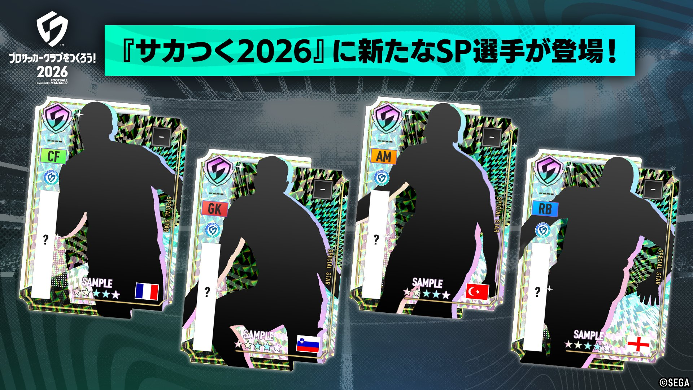
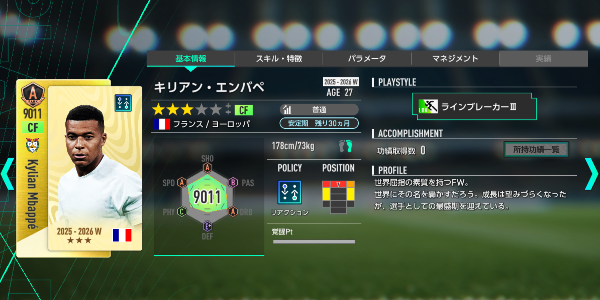
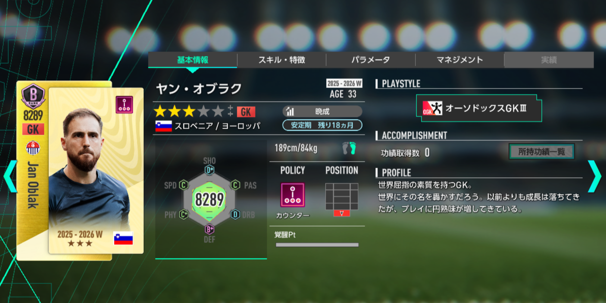
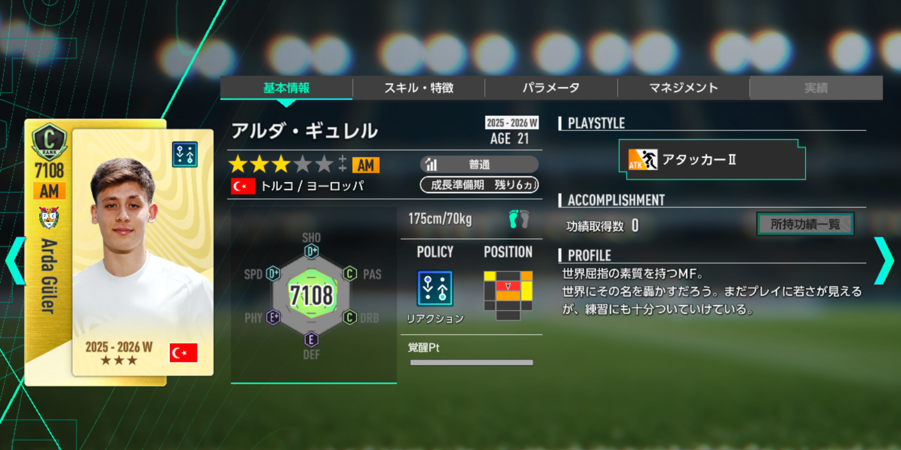
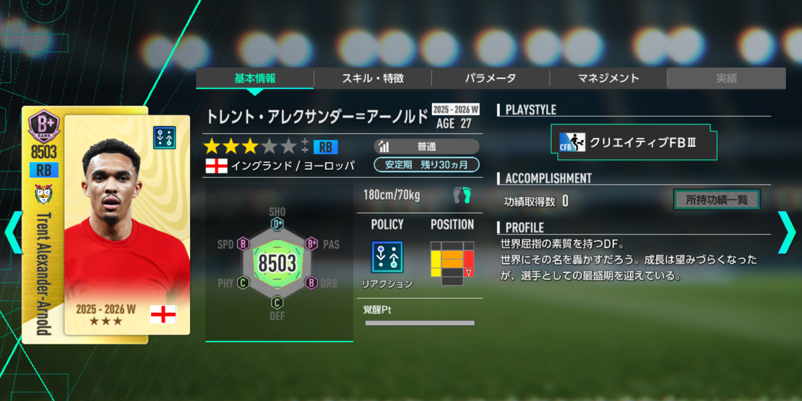

【サカつく2026】次回SP選手は誰？匂わせ画像から新ガシャ選手を予想！
サカつく2026公式から、次回ガシャで追加される新SP選手の匂わせ画像が公開されました。 画像内には選手名こそ伏せられていますが、国旗・ポジション・シルエットが確認できます。 今回はその情報をもとに、実装される可能性が高そうな4名を予想していきます。

▶ サカつく2026公式Xの投稿を見る
公開された匂わせ情報
今回の画像で確認できる情報は、以下の4パターンです。 選手名は非公開ですが、国旗とポジションがかなり大きなヒントになっています。
| 国 | ポジション | 注目ポイント |
|---|---|---|
| フランス | CF | 世界的スター級のFW候補 |
| スロベニア | GK | 国籍とポジションだけでかなり絞れる |
| トルコ | AM | 若手スター候補との一致度が高い |
| イングランド | RB | 髪型・体格のシルエットが重要 |
フランスCF予想
フランス代表のCF候補として、まず名前が挙がるのはキリアン・エムバペです。 現在の世界サッカー界を代表するスター選手であり、ワールドカップ2026特集との相性も抜群です。
- フランス代表の前線で最も話題性がある
- CF枠の目玉選手としてガシャ訴求力が高い
- 新SP選手として実装された場合のインパクトが大きい

※画像は現在ゲーム内に実装されているサカつくモードの選手です。
スロベニアGK予想
今回の4名の中で、最も本命度が高いと感じるのがスロベニアGKです。 スロベニア代表のGKで世界的な知名度を持つ選手といえば、ヤン・オブラクが筆頭候補になります。
- スロベニア代表のGKという条件でかなり絞りやすい
- 世界的な知名度があり、SP選手としての格も十分
- シルエットも大型GKらしい雰囲気に見える

※画像は現在ゲーム内に実装されているサカつくモードの選手です。
トルコAM予想
トルコ代表のAM候補として本命視したいのがアルダ・ギュレルです。 若手スターとして注目度が高く、AM表記とも非常に相性が良い選手です。
- トルコ代表の中でも注目度が高い若手スター
- AMというポジション表記とイメージが近い
- 細身でやや長めの髪型に見えるシルエットとも一致しやすい

※画像は現在ゲーム内に実装されているサカつくモードの選手です。
イングランドRB予想
今回最も予想が難しいのがイングランドRBです。 候補としてはカイル・ウォーカー、リース・ジェームズも考えられますが、シルエットの形をそのまま髪型として見ると、アレクサンダー＝アーノルド感がかなりあります。
- 頭部のボリュームが上方向に大きく見える
- 首周りや腕のラインが比較的スマート
- RBのスター選手として実装された場合の注目度が高い

※画像は現在ゲーム内に実装されているサカつくモードの選手です。
編集部の最終予想
国旗・ポジション・シルエット・ガシャの目玉感を総合すると、今回の最終予想は以下の4名です。
| 国 / ポジション | 予想選手 | 自信度 | 理由 |
|---|---|---|---|
| フランス / CF | キリアン・エムバペ | 高め | 話題性と目玉感が圧倒的 |
| スロベニア / GK | ヤン・オブラク | 超本命 | 国籍とポジションの一致度が高い |
| トルコ / AM | アルダ・ギュレル | 高め | AM表記と若手スター感が一致 |
| イングランド / RB | トレント・アレクサンダー＝アーノルド | やや高め | 髪型・体格のシルエットが近い |
まとめ
今回の匂わせ画像から予想すると、エムバペ、オブラク、アルダ・ギュレル、アレクサンダー＝アーノルドの4名が有力候補に見えます。 特にスロベニアGKのオブラクは、国籍とポジションだけでもかなり可能性が高そうです。
正式発表で何人当たるのか、答え合わせが楽しみですね。 実装後は選手性能やプレースタイル、フォメコン適性もあわせてチェックしていきます。